CS 180 Project 3: Fun with Flow Models
Part A: Exploring the Power of Flow Models
Setup
For this project, I use the pretrained PixNerd-XXL-P16-T2I model to generate and edit 512 × 512 images. I ran the notebook on an NVIDIA L4 GPU in float32. Input images are center-cropped, resized, and normalized to \([-1,1]\); prompts are encoded using Qwen3.
The base seed is 180 and the Euler step size is 0.02. I begin with “a high quality photo” and add classifier-free guidance later. Throughout this project, \(t=0\) is noise and \(t=1\) is a clean image.
1. Visualizing Training and Sampling
1.1 Constructing Noisy Training Inputs
I start with a photograph of Half Dome. My interpolate function constructs noisy inputs by mixing the clean image \(x_1\) with Gaussian noise:
\[ x_t=(1-t)\epsilon+t x_1,\qquad \epsilon\sim\mathcal N(0,I). \]
This scales the image as well as adding noise. I use the same noise tensor at \(t=0.25,0.50,0.75\), and keep these inputs for Sections 1.2–1.5.


At \(t=0.25\), the rock and trees are barely visible. The mountain’s outline becomes clear at \(t=0.50\), and much more of the photograph survives at \(t=0.75\). Increasing time moves us closer to the original image.
1.2 Classical Denoising
First, I try Gaussian blur as a baseline. I divide by \(t\) to restore the image’s amplitude before filtering:
\[ \hat x_1^{\mathrm{blur}}=G_\sigma\!\left(\frac{x_t}{t}\right). \]
Dividing by \(t\) also amplifies the noise, so blur is still needed. I test \(\sigma\in\{1,2,4,8,16\}\) and select the lowest-MSE result against the original. The chosen values are 8, 4, and 1 for the three times.

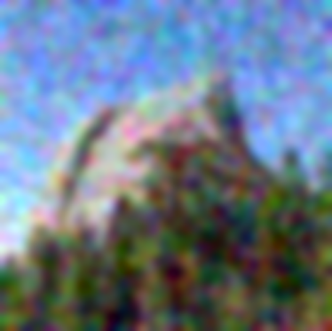

Strong blur makes the highly corrupted input recognizable, but removes the granite texture and individual branches. At \(t=0.75\), a small blur reduces noise while retaining more detail. The filter helps, but cannot reconstruct the structures it averages away.
1.3 One-Step Denoising
Next, I use the flow model with “a high quality photo.” My one_step_denoise function predicts the velocity once and extrapolates to the clean endpoint:
\[ \hat x_1=x_t+(1-t)v_\theta(x_t,t,c). \]


Even at \(t=0.25\), the model recovers a plausible mountain and forest. However, the rock shape changes and the scene looks smoother than the original. The higher-time estimates preserve more of the photograph. One prediction is useful, but may not follow the entire denoising path accurately.
1.4 Visualizing Velocity
What is the model actually adding? Since I saved the original noise, I can compare its predicted update with the exact update needed to recover Half Dome:
\[ \begin{aligned} \Delta_{\mathrm{pred}}&=(1-t)v_\theta(x_t,t,c),\\ \Delta_{\mathrm{gt}}&=(1-t)(x_1-\epsilon)=x_1-x_t. \end{aligned} \]
The error heatmap is the root-mean-square difference across RGB at each pixel:
\[ E_t=\sqrt{\operatorname{mean}_{\mathrm{RGB}}[(\Delta_{\mathrm{pred}}-\Delta_{\mathrm{gt}})^2]}. \]
Errors are computed before display scaling. All update panels share a symmetric scale with zero at middle gray. All heatmaps share a linear magma scale from 0 to 0.5, with larger errors clipped for display.
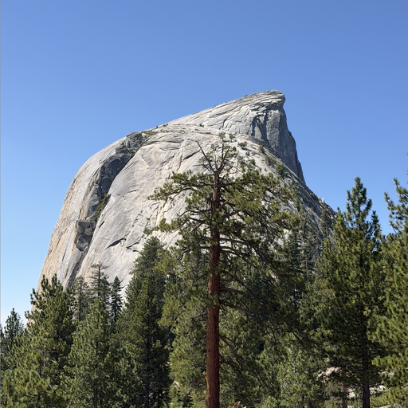
t = 0.25
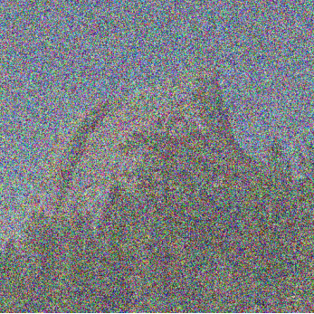
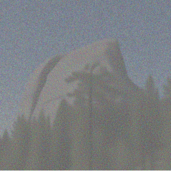
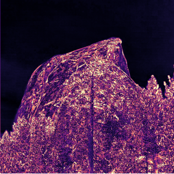
t = 0.50
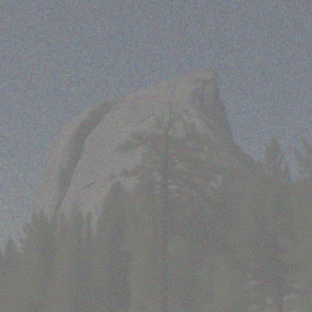
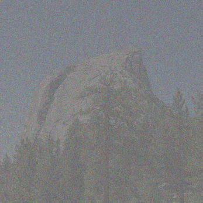
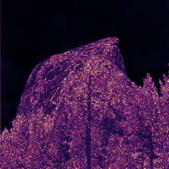
t = 0.75
Shared RGB RMS error scale
The largest errors occur over the rock and trees at \(t=0.25\); the sky is easier to recover. The errors decrease as more source information is retained. The higher-time update panels look muted because they use the same scale while requiring a smaller correction.
1.5 Iterative Denoising with Euler Sampling
Instead of jumping to the endpoint, euler_sample takes small steps and predicts a new velocity after each update:
\[ x_{t+h}=x_t+h\,v_\theta(x_t,t,c). \]
Starting from the saved \(t=0.50\) input, I take 25 updates with \(h=0.02\). Below are the initial state, every fifth update, and the final result. The last step is shortened when needed to reach \(t=1\) exactly.


Noise gradually disappears while the mountain and forest become sharper. Here is the comparison with the original, Gaussian blur, and one-step denoising, all using the same noisy input:


Blur softens the trees and granite. One-step denoising recovers the scene, but smooths some texture. Euler sampling restores finer detail and looks closer to the original because it can adjust the predicted direction as the image changes.
1.6 Generating Images from Noise
The same sampler can generate images from scratch. I initialize Gaussian noise with seeds 180–184, then take 50 Euler updates from \(t=0\) to \(t=1\) with “a high quality photo,” without extra guidance.
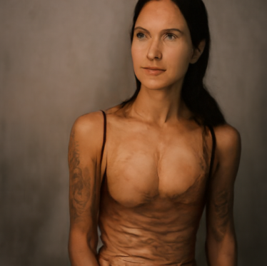
All five samples favor portraits, although the prompt does not specify a person. Quality is uneven: seed 180 has a distorted face, seed 181 has unusual body proportions, and seed 183 has muddled facial features. Seeds 182 and 184 are more coherent. The generic prompt leaves plenty of room for variation, but these samples still concentrate on a similar subject.
2. Conditional Generation and Guidance
2.1 Classifier-Free Guidance
To improve generation, I implement cfg_velocity using conditional and empty-string predictions at the same image and time:
\[ v_{\mathrm{cfg}}=v_c+w(v_c-v_u). \]
I use \(w=7\), with \(w=0\) corresponding to ordinary conditional sampling. Each pair below reuses the exact initial noise from Section 1.6: ordinary sampling on the left, CFG on the right.
CFG produces much clearer faces, more coherent anatomy, and stronger contrast. Seed 180 becomes a recognizable portrait, and seed 183 loses its smeared facial structure. Guidance also changes the subjects, rather than just sharpening the original outputs. Both sets remain mostly portraits; five pairs are not enough to measure a change in diversity.
3. Creative Applications
For these experiments, I use \(h=0.02\), \(w=7\), and the empty-string unconditional prompt. Every editing sweep uses seed 180 and starting times 0.02, 0.04, 0.06, 0.10, 0.14, 0.25, and 0.50.
3.1 Image-to-Image Editing
My edit function noises an input at the selected time, then integrates the guided velocity to \(t=1\):
\[ x_{t_{\mathrm{start}}}=(1-t_{\mathrm{start}})\epsilon+t_{\mathrm{start}}x_1. \]
Smaller starting times allow larger edits; larger times preserve more of the source. I use “a high quality photo” on the required Campanile image, Half Dome, and a pixel-art chicken.
Campanile
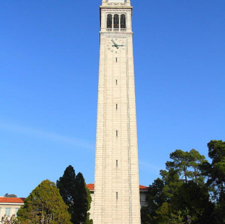
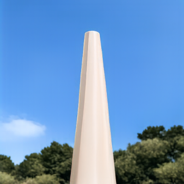
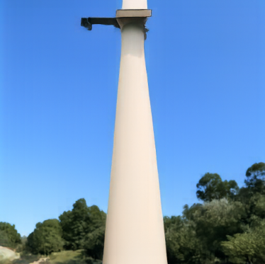
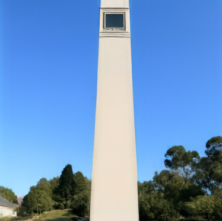
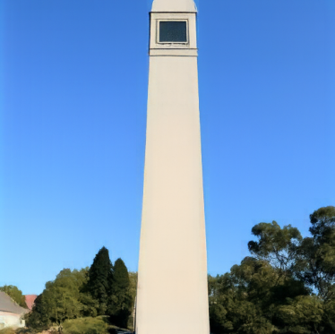
Half Dome

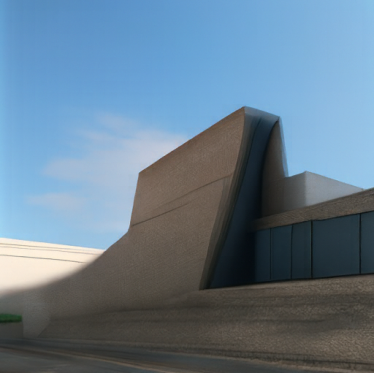
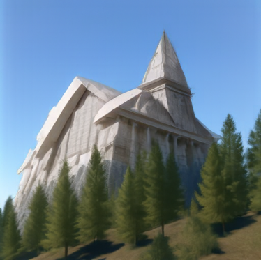
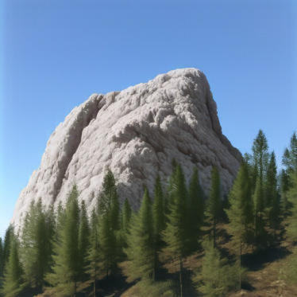
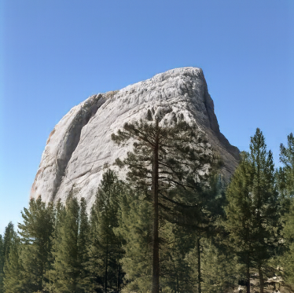
Pixel-art chicken
The Campanile retains its tower silhouette, but becomes smooth and changes its top at low times. Half Dome is less stable: \(t=0.02\) produces a portrait and \(t=0.04\) resembles a building. The pixel chicken becomes people in orange clothing, retaining its palette but losing its identity. At higher times, both inputs return to their original forms.
Editing Hand-Drawn and Web Images
I repeat the same procedure for an acrylic landscape from the web and two of my drawings: a snow-capped mountain and a flower.
Web image: acrylic landscape
My drawing: snow-capped mountain
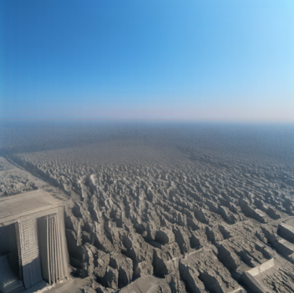
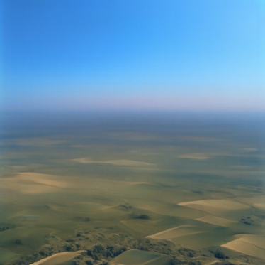
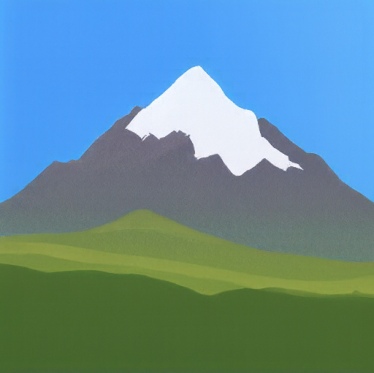
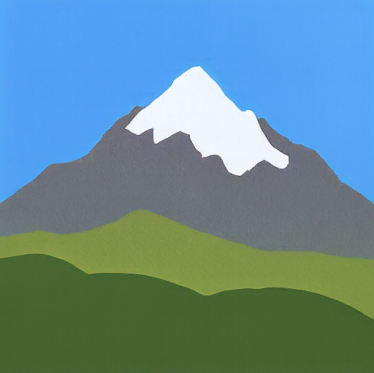
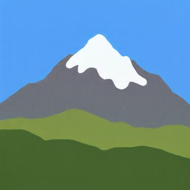
My drawing: flower
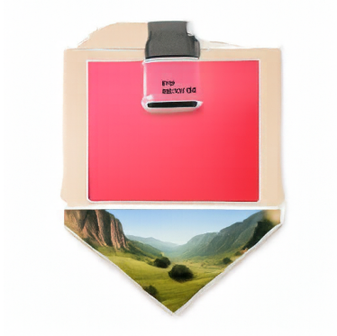
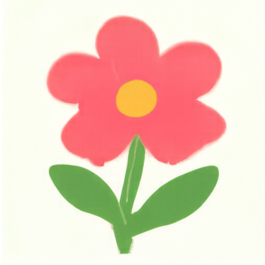
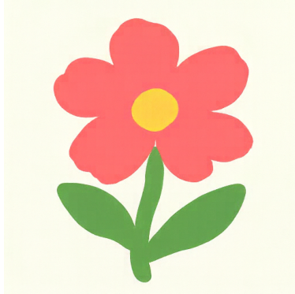
The landscape becomes unrelated objects at low times, then recovers its fields and mountains. The mountain drawing works particularly well at \(t=0.06\), becoming a realistic snowy peak. The flower gains more dimensional petals at \(t=0.06\) and \(t=0.10\). Higher times preserve the flat drawings. There is a useful middle region where the model reinterprets the image without completely losing its subject.
3.2 Text-Guided Image Editing
Now I replace the generic prompt with a description of the desired edit, using the same three inputs and sampling settings.
Campanile → lighthouse
Prompt: “a photograph of a lighthouse beside the ocean”
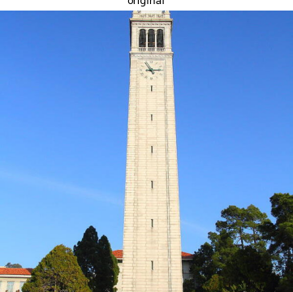
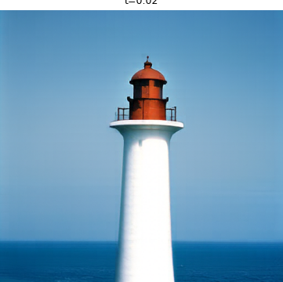
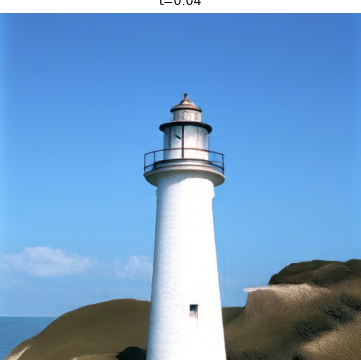
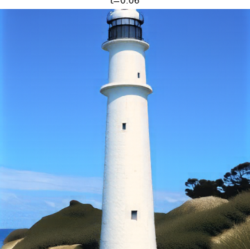
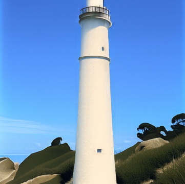
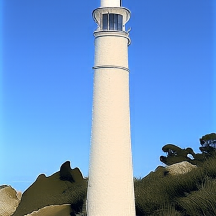
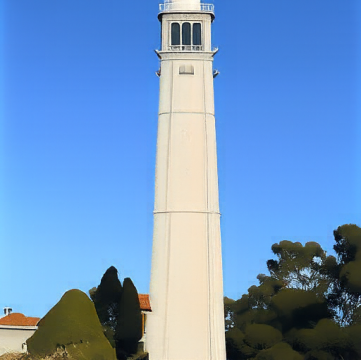
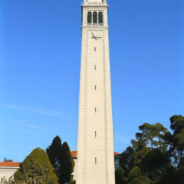
Half Dome → volcano
Prompt: “a photograph of an erupting volcano surrounded by forest”
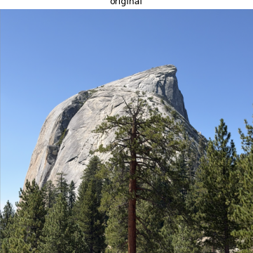
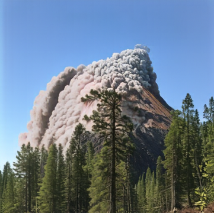
Pixel chicken → rooster
Prompt: “a photograph of a rooster against a turquoise background”
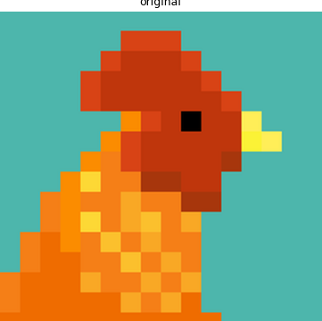
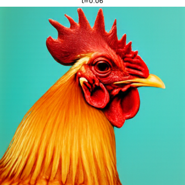
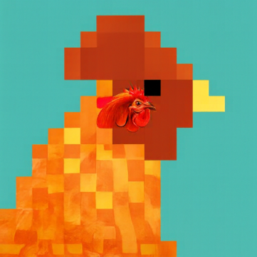
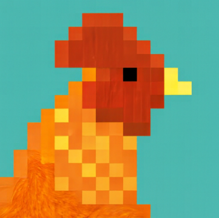
The lighthouse prompt gives the Campanile a clear target: low-time outputs are lighthouses beside the ocean, while intermediate results keep the tower’s framing. At \(t=0.25\), the source architecture begins to dominate again.
Half Dome becomes an erupting volcano at low times. At \(t=0.10\) and \(t=0.14\), smoke rises from a rock formation that still resembles the original. By \(t=0.50\), most of the source scene remains.
The rooster prompt is especially effective. Low-time outputs become detailed rooster portraits while preserving the turquoise background. At \(t=0.25\), a small, complete photographic rooster head appears embedded within the mostly pixelated silhouette. The edit is localized: most of the source’s pixel-art structure remains.
3.3 Visual Anagrams
For visual_anagrams, I predict guided velocities for the upright image and a 180° rotation. I rotate the second prediction back, average the two, and take an Euler step:
\[ \begin{aligned} v_a&=v_{\mathrm{cfg}}(x_t,t,p_a),\\ v_b&=F\!\left(v_{\mathrm{cfg}}(F(x_t),t,p_b)\right),\\ v&=(v_a+v_b)/2. \end{aligned} \]
Here \(F\) flips both spatial axes. These two chosen prompt pairs use seed 181:
Waterfall / sailor
Cabin / wolf
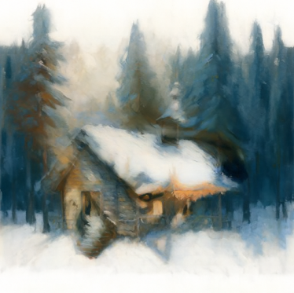
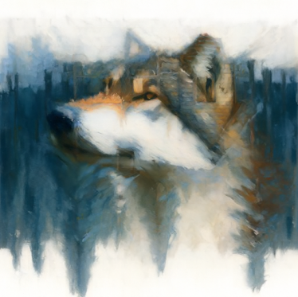
The waterfall and surrounding canyon become the sailor’s face and beard when rotated. In the cabin/wolf pair, the snow and pine trees form the wolf’s facial features. These were more convincing than my weaker trials, which contained competing features or a faint second subject. The method gives both prompts influence, but prompt choice still matters.
3.4 Hybrid Images
To make hybrids, I combine low-frequency velocity from one prompt with high-frequency velocity from another:
\[ \begin{aligned} v_a&=v_{\mathrm{cfg}}(x_t,t,p_a),\\ v_b&=v_{\mathrm{cfg}}(x_t,t,p_b),\\ v&=G_\sigma(v_a)+v_b-G_\sigma(v_b). \end{aligned} \]
The composite velocity drives each Euler step. I use Gaussian blur with kernel size 265 and sigma 16. Prompt \(p_a\) determines the distant structure, while \(p_b\) provides close-up detail.
Fox / autumn forest
Distant: “an oil painting of a fox”
Close: “an oil painting of an autumn forest”
Elephant / stone ruins
Distant: “an oil painting of an elephant's face”
Close: “an oil painting of ancient stone ruins”
The fox/forest result uses seed 181. Up close, orange foliage and dark trunks dominate; at a smaller size, their arrangement suggests a fox’s face. The elephant/ruins result uses seed 298838. Stone blocks form the near view, while the dark openings and central shape suggest an elephant when reduced.
I show native 64- and 32-pixel views alongside each full hybrid. The separation is imperfect: scenery remains visible, and the elephant is harder to recognize than the fox. Still, the results show how combining different frequency bands can make one image support two interpretations.
Part B: Flow Matching on MNIST
I train MNIST UNets for single-step denoising, then generate digits with time- and class-conditioned flow matching.
1. Training a Single-Step Denoising UNet
1.1 Implementing the UNet
The UNet combines downsampling, a bottleneck, and upsampling, with skip connections that preserve image detail.
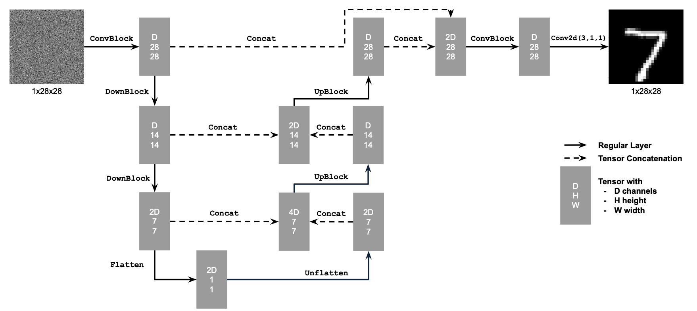

1.2 Using the UNet to Train a Denoiser
I add Gaussian noise to clean MNIST digits, with pixels normalized to \([0,1]\):
\[ z=x+\sigma\epsilon,\qquad \epsilon\sim\mathcal N(0,I). \]
The denoiser reconstructs clean digits with an MSE loss:
\[ L=\mathbb E_{z,x}\|D_\theta(z)-x\|^2. \]
Each column reuses the same digit and noise at \(\sigma=[0.0,0.2,0.4,0.5,0.6,0.8,1.0]\).
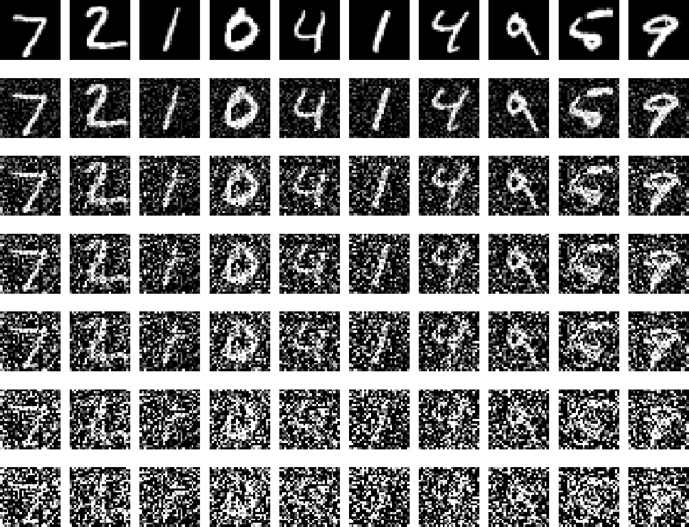
1.2.1 Training
I train for five epochs at \(\sigma=0.5\), using hidden dimension 128, batch size 256, and Adam at \(10^{-4}\), with fresh noise each batch.
The test predictions become sharper between epochs 1 and 5, using identical noisy inputs.
1.2.2 Out-of-Distribution Testing
I test the final model on the same digit at all seven noise levels. Predictions degrade as noise increases, especially at \(\sigma=1.0\).
1.2.3 Denoising Pure Noise
A fresh denoiser trains for five epochs on pure Gaussian noise \(z=\epsilon\), paired independently with clean digits.
Both checkpoints produce blurry averages of digits 0–9. With MSE and independent inputs and targets, the optimal prediction is the training set’s pixelwise mean:
\[ D^*(z)=\mathbb E[x\mid z]=\mathbb E[x]. \]
2. Training a Flow Matching Model
Flow matching learns velocity along a path from Gaussian noise (\(t=0\)) to a clean digit (\(t=1\)):
\[ x_t=(1-t)x_0+t x_1,\qquad x_0\sim\mathcal N(0,I),\quad t\in[0,1]. \]
The target velocity is \(x_1-x_0\), giving the loss
\[ L=\mathbb E_{x_0,x_1,t}\|(x_1-x_0)-u_\theta(x_t,t)\|^2. \]
2.1 Adding Time Conditioning to UNet
Two FC blocks embed time \(t\) and modulate decoder features after Unflatten and the first UpBlock.

2.2 Training the UNet
I train for ten epochs, with hidden dimension 64, batch size 64, and Adam at \(10^{-2}\). An exponential scheduler decays the learning rate by \(0.1^{1/10}\) each epoch.

Mean training MSE decreases from 0.17787 to 0.09141.
2.3 Sampling from the UNet
I generate 40 samples at epochs 1, 5, and 10 using 50 Euler steps and fixed initial noise (seed 180).

Later checkpoints produce more recognizable digits, though some remain misshapen.
2.4 Adding Class Conditioning to UNet
Two additional FC blocks embed a one-hot digit label. I zero the entire class vector 10% of the time during training to enable classifier-free guidance.
2.5 Training the UNet
Training uses the same ten-epoch settings, with class dropout:
Mean training MSE decreases from 0.17394 to 0.08463.
2.6 Sampling from the UNet
With 300 Euler steps and CFG \(\gamma=5\), I generate four instances of each digit at epochs 1, 5, and 10, reusing initial noise (seed 180).
Class conditioning produces clearer digits that match their requested labels.
Removing the Learning Rate Scheduler
I remove exponential decay and lower Adam’s learning rate from 0.01 to a constant 0.003. All other training settings stay the same.
With matched noise and sampling settings, both final grids show similarly legible digits. In this run, final training MSE is 0.08645 without the scheduler versus 0.08463 with it (2.2% higher), while visual quality remains comparable.